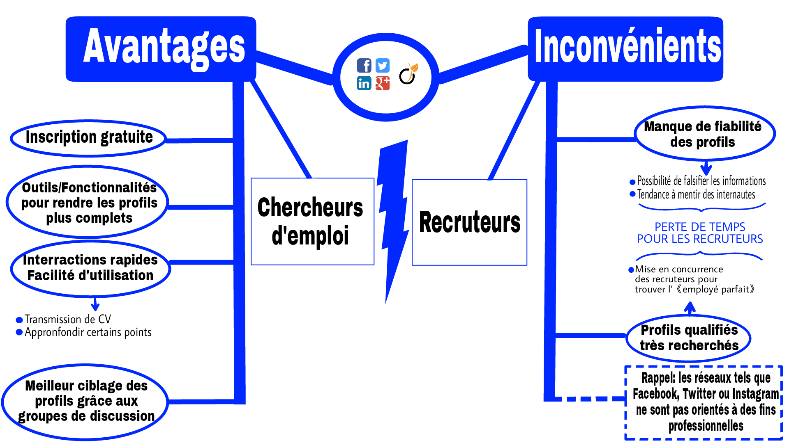

Ne vous êtes vous jamais demandé quelle était la façon la plus efficace et la plus rapide de trouver un travail ? Si oui, la première chose que vous avez dû faire est probablement d’aller sur Internet pour comparer les centaines de petites annonces et offres d’emploi sur des dizaines de sites différents, n’est-ce pas ? Mais avez-vous pensé qu’un réseaux social pouvait vous permettre de candidater à des offres sérieuses, parfois même sans que vous ayez à bouger le petit doigt ? Et bien figurez-vous que le e-recrutement grâce aux réseaux sociaux professionnels est la nouvelle tendance du XXIe siècle : en effet, selon un sondage récent effectué en France, jusq'à 60 % des candidats sont sélectionnés par le biais d’un réseaux social. Nous vous expliquerons dans cet article comment des réseaux sociaux professionnels, tels que LinkedIn et Viadeo, mais aussi non professionnels, tels que Facebook ou Twitter, modifient petit à petit les règles du marché du travail.
En France, de nos jours, 3 gros acteurs se répartissent le marché du recrutement sur Internet : LinkedIn, Viadeo et Facebook. Les deux premiers sont des réseaux sociaux à vocation professionnelle qui comptent respectivement 14 et 10 millions d'utilisateurs Français. Cependant, la multinationale Californienne Facebook vient de mettre en place la plateforme « Facebook Jobs ». Elle va permettre à chaque utilisateur de répondre à des annonces de postes directement depuis leurs sites par le biais de leur messagerie électronique.
Au niveau international, les trois réseaux sociaux les plus utilisés par les recruteurs sont LinkedIn (79%), Facebook (26%) et, tout récemment, Twitter (14%). Néanmoins, d'autres acteurs plus petits entrent dans la partie: Altaïde, par exemple, est une société de recrutement française dirigée par Jacques FROISSART qui base ses services de recrutement sur une utilisation appropriée des réseaux sociaux. Son compte LinkedIn est suivi par pas moins de 15.000 personnes et son compte Twitter par presque 52.000 followers.
A la mise en service des premiers réseaux sociaux professionnels, le succès n’était pas au rendez-vous. LinkedIn, créé en 2003, comptait à peine 27 000 membres en 2005. Le réflexe des Ressources Humaines n’était pas encore de vérifier les profils des candidats sur Internet. 2012 marque le début de la nouvelle ère du e-recrutement. LinkedIn fait parti des réseaux ayant subi un fort gain de popularité au cours de l’année 2012 : son chiffre d’affaire a en effet augmenté de 86 % par rapport à celui de 2011 et il comprendrait environ 90 % des recruteurs. Environ 80 % des recruteurs deviennent actifs sur ces plateformes. Pour les autres utilisateurs, trois fonctions des réseaux sociaux professionnels deviennent très vite indispensables : rechercher un emploi (52%), élargir son capital social en recherchant de nouveaux contacts professionnels (47%) et chercher des collègues de travail (47%).
Pour orienter le chercheur d’emploi, les réseaux sociaux disposent d’algorithmes qui proposent des profils stratégiques de recruteurs en fonction des données de l’utilisateur (recherches passées, centres d’intérêts, liens professionnels déjà effectués, etc.). De cette façon, certains recruteurs ne jurent plus que par ces algorithmes, qui vont trouver « l’employé parfait » pour l’entreprise.
Cependant, les données utilisées par les algorithmes sont souvent très peu dévoilées, et il est certains que les réseaux sociaux professionnels utilisent des données externes, telles que celles provenant des réseaux sociaux traditionnels ou des sites que vous fréquentez régulièrement (grâce aux « cookies »). De cette façon, il est impératif de soigner son e-réputation, c’est-à-dire son image sur internet, soit « se googliser ».
En effet, le profil social des candidats serait vérifié par 90 % des recruteurs avant que ceux-ci ne se positionnent sur l’embauche. Cela signifie que toute publication relevant de la vie privée de l’individu est une source d’influence non négligeable pour le recruteur.
En ce qui concerne le futur rôle des réseaux sociaux dans dans l’e-recrutement, la plupart des utilisateurs semblent d’accord sur un point : les job boards ne céderont pas leur place face à ces nouvelles tendances. Selon un sondage réalisé en France en 2012, environ 70 % des personnes interrogées pensent que les réseaux sociaux resteront un moyen de recrutement complémentaire aux méthodes déjà existantes, tandis que seul 15 % d’entre elles imaginent ces outils remplacer les méthodes de recherche d’emploi classique. Il n’empêche qu’ils sont de plus en plus nombreux à entrer sur le marché de l’emploi : Twitter, par exemple, devient aussi de plus en plus utilisé dans ce domaine.
Ce projet a été réalisé par les étudiants COTS Maxime, BALFOUONG Florentin, CALIPPE Dawen, BOURY Elie et LAVERGNE Thomas, en première année de DUT Informatique.